DeepSeek changes the conversation
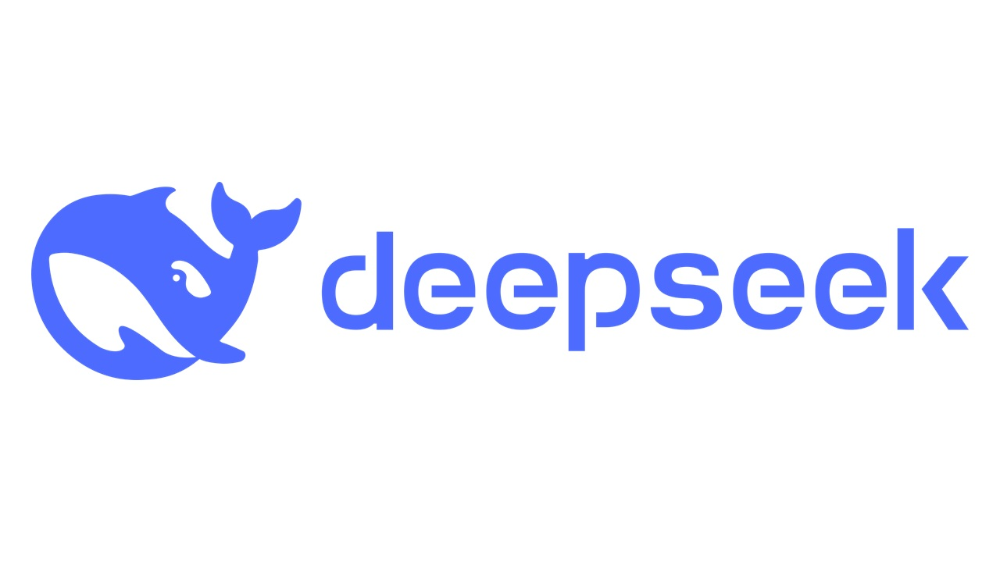
From my archive, written 27 January 2025. These are my impressions at the time.
I’ve seen the new DeepSeek AI that is quite a big game changer in the AI industry. A Chinese company has directly competed with OpenAI through its new DeepSeek model, its free, open source and is quite advanced, directly competing with GPT’s paid subscriptions to access the model. It being open source means you can run locally on your own device, all for completely free. OpenAI and Meta are facing a massive challenge because of this, they’re running their businesses through privatised AI, Deepseek have also spent a lot less on training the model ($6 million) and it also allows for access to countries who have been denied AI Nvidia chips that J. B. presented having access to.
Deepseek is a big kick in the face to the entire AI industry so far, OpenAI initially wanted to be a non-profit company before they slowly backtracked and now a non-profit company comes to present a challenge. Honestly, I think that just like the internet, these AI models should be free to the people, the added competition and challenge it poses for businesses is great for consumers, I just have a small feeling that Deepseek could in the future maybe try and also backtrack or have an alternative plan up their sleeve in the future because I genuinely don’t understand how they intend to make profit.
OLWA · Issue 1
Read the issue below, or open the PDF in a new tab ↗.
Read Issue 1 · 24 pages
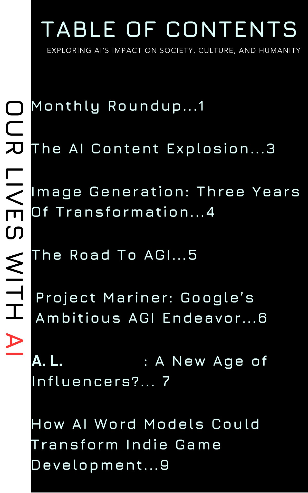
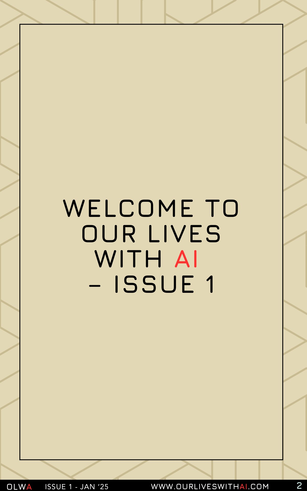
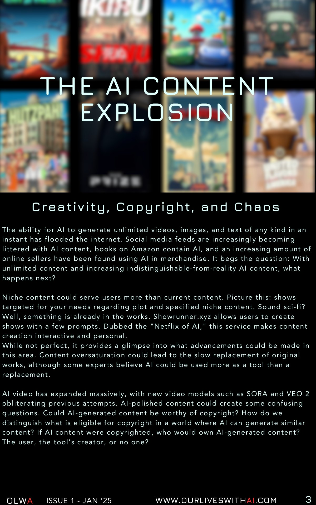
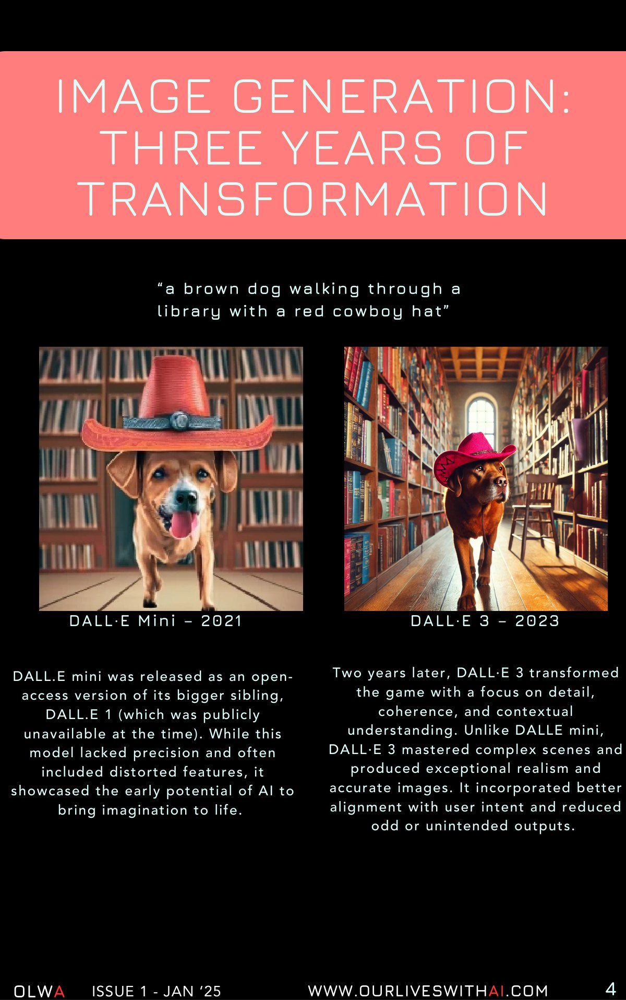
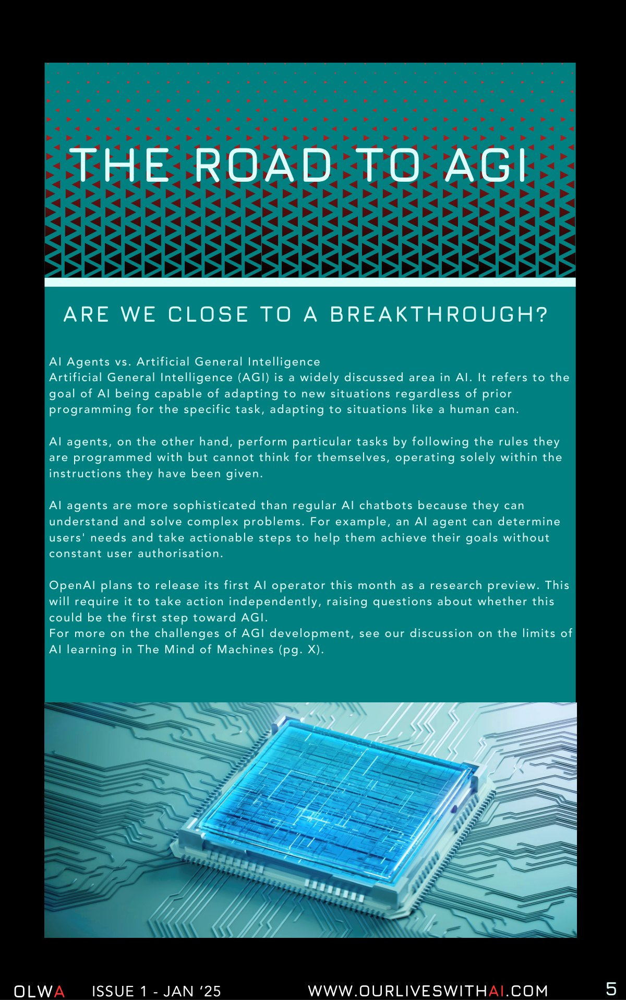
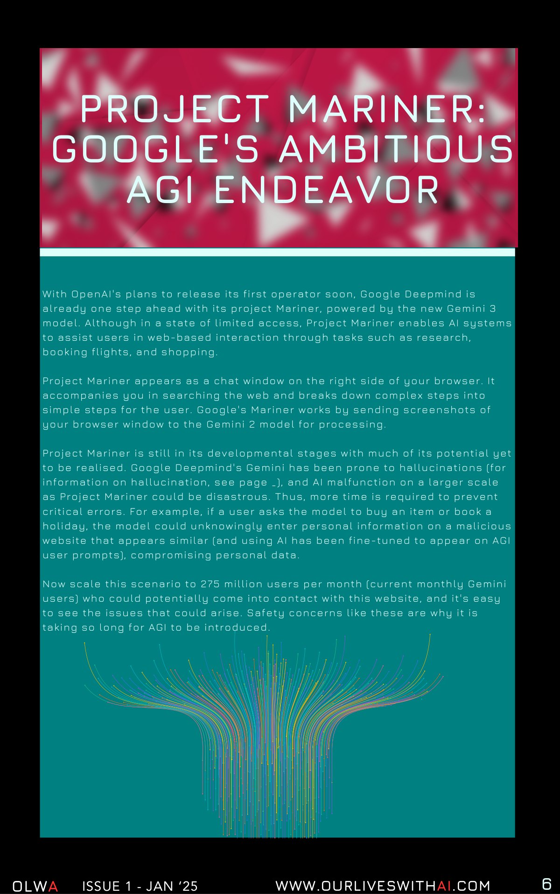
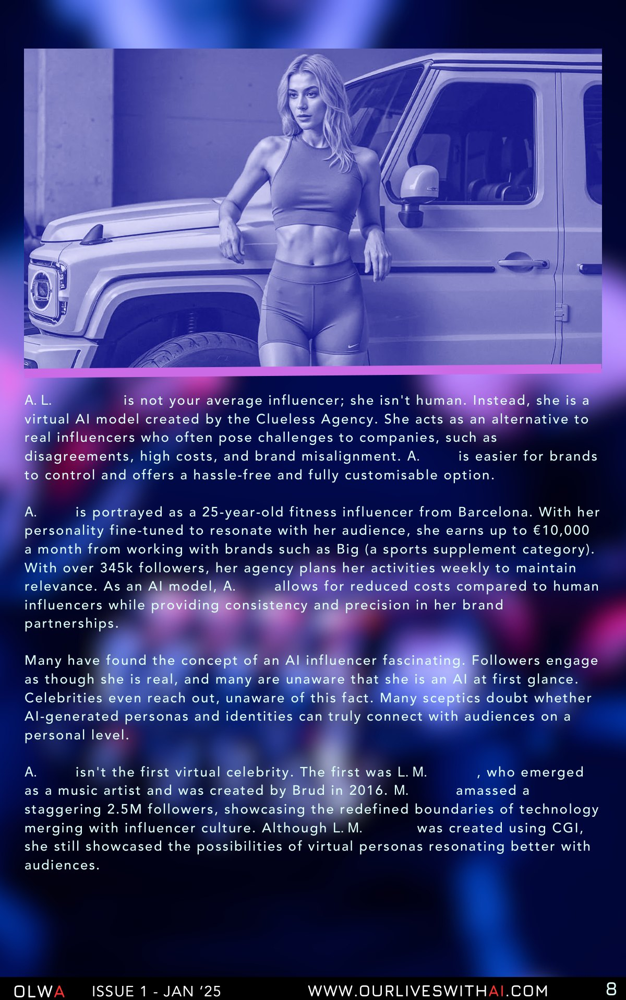
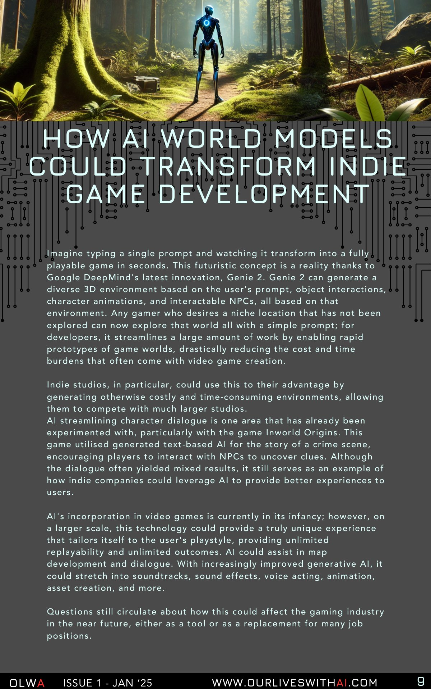
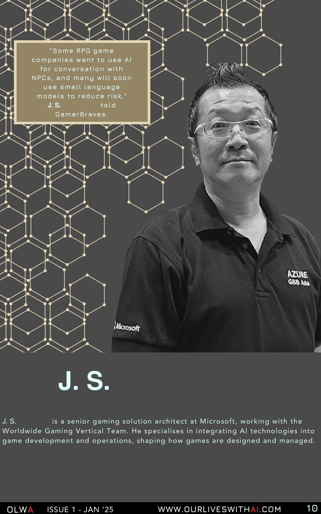
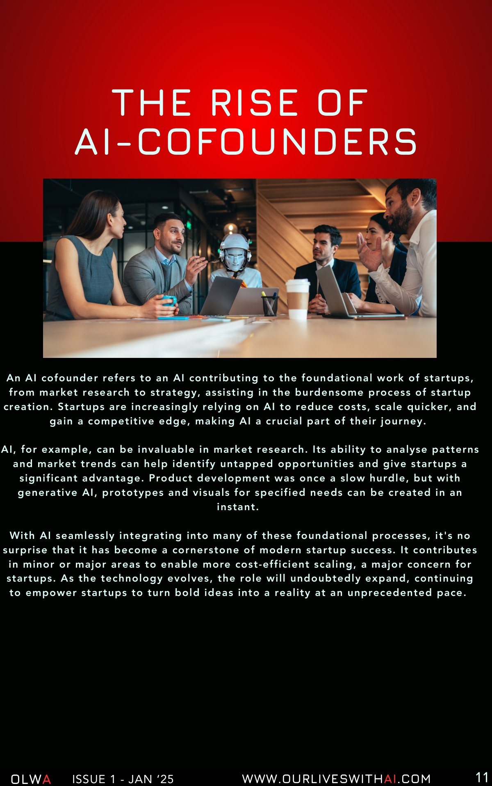
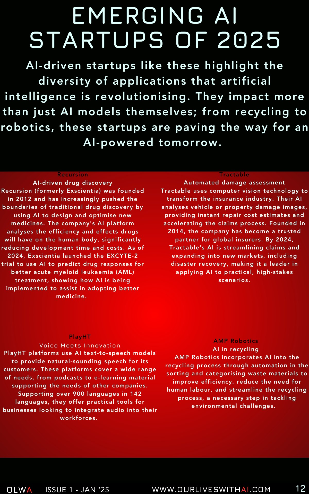
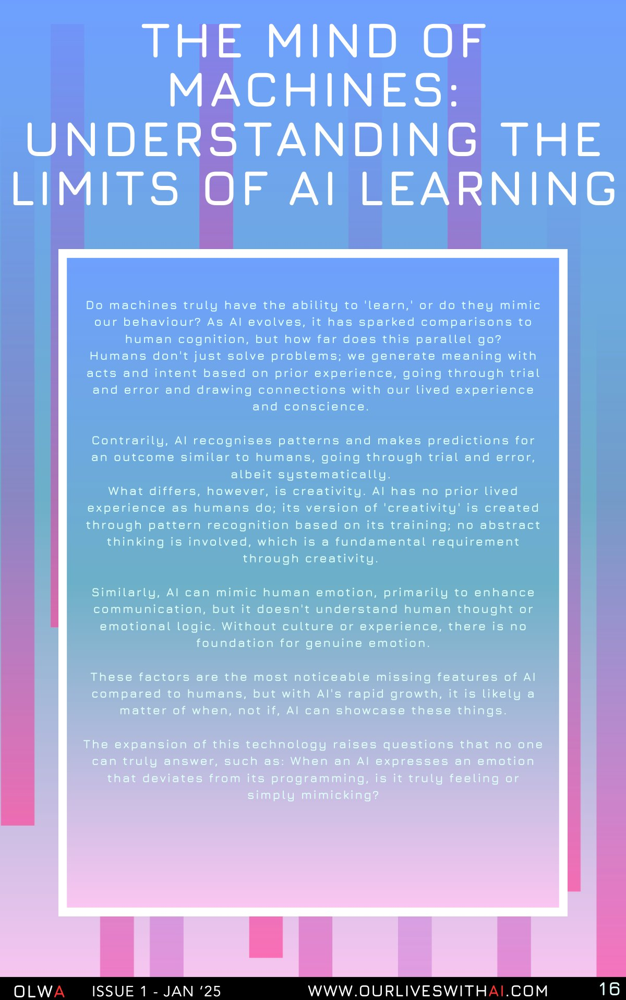